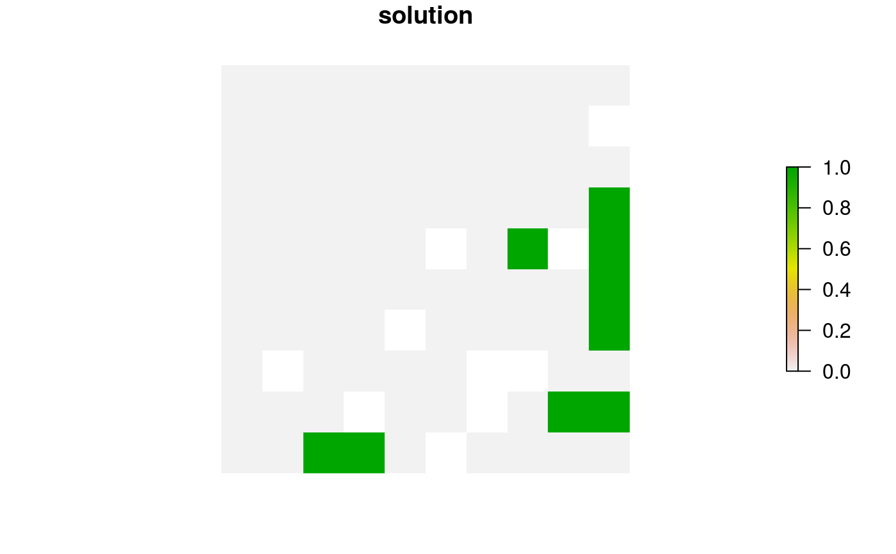
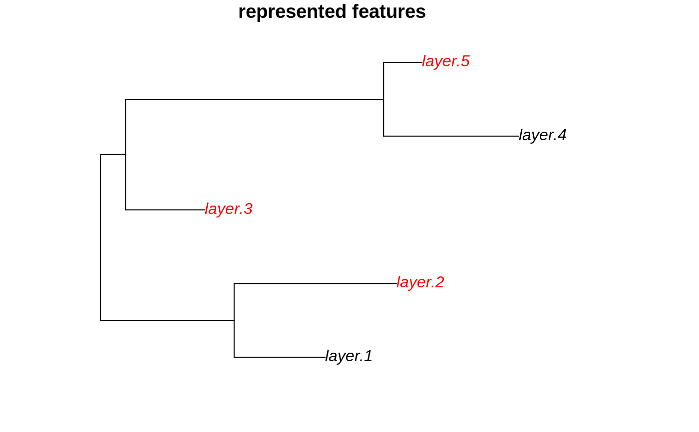
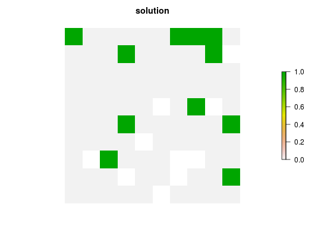
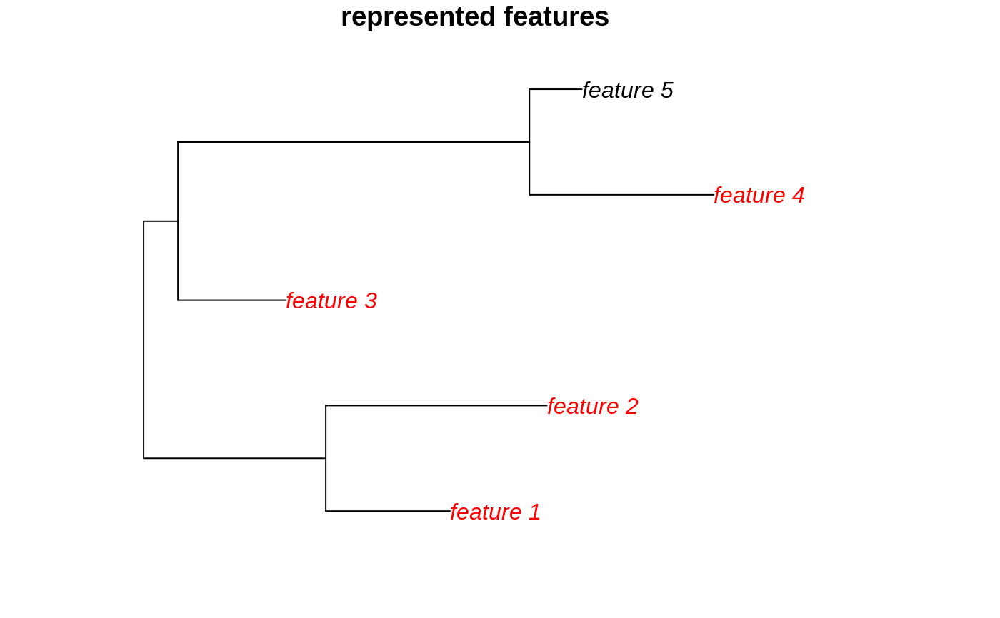
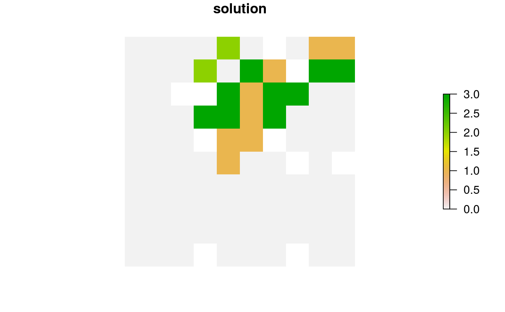
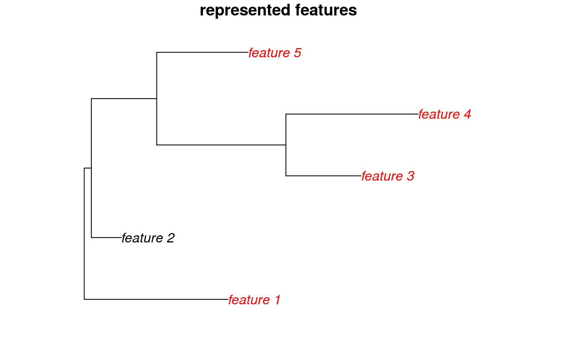

R/add_max_phylo_objective.R
add_max_phylo_objective.RdSet the objective of a conservation planning problem to
maximize the phylogenetic diversity of the features represented in the
solution subject to a budget. This objective is similar to
add_max_features_objective except
that emphasis is placed on representing a phylogenetically diverse set of
species, rather than as many features as possible (subject to weights).
This function was inspired by Faith (1992) and Rodrigues et al.
(2002).
add_max_phylo_objective(x, budget, tree)
| x |
|
|---|---|
| budget |
|
| tree |
|
ConservationProblem-class object with the objective
added to it.
A problem objective is used to specify the overall goal of the conservation planning problem. Please note that all conservation planning problems formulated in the prioritizr package require the addition of objectives---failing to do so will return an error message when attempting to solve problem.
The maximum phylogenetic representation objective finds the set of
planning units that meets representation targets for a phylogenetic tree
while staying within a fixed budget. If multiple solutions can meet all
targets while staying within budget, the cheapest solution is chosen.
Note that this objective is similar to the maximum
features objective (add_max_features_objective) in that it
allows for both a budget and targets to be set for each feature. However,
unlike the maximum feature objective, the aim of this objective is to
maximize the total phylogenetic diversity of the targets met in the
solution, so if multiple targets are provided for a single feature, the
problem will only need to meet a single target for that feature
for the phylogenetic benefit for that feature to be counted when
calculating the phylogenetic diversity of the solution. In other words,
for multi-zone problems, this objective does not aim to maximize the
phylogenetic diversity in each zone, but rather this objective
aims to maximize the phylogenetic diversity of targets that can be met
through allocating planning units to any of the different zones in a
problem. This can be useful for problems where targets pertain to the total
amount held for each feature across multiple zones. For example,
each feature might have a non-zero amount of suitable habitat in each
planning unit when the planning units are assigned to a (i) not restored,
(ii) partially restored, or (iii) completely restored management zone.
Here each target corresponds to a single feature and can be met through
the total amount of habitat in planning units present to the three
zones.
The maximum phylogenetic representation objective for the reserve design problem can be expressed mathematically for a set of planning units (\(I\) indexed by \(i\)) and a set of features (\(J\) indexed by \(j\)) as:
$$\mathit{Maximize} \space \sum_{i = 1}^{I} -s \space c_i \space x_i + \sum_{j = 1}^{J} m_b l_b \\ \mathit{subject \space to} \\ \sum_{i = 1}^{I} x_i r_{ij} >= y_j t_j \forall j \in J \\ m_b <= y_j \forall j \in T(b) \\ \sum_{i = 1}^{I} x_i c_i \leq B$$
Here, \(x_i\) is the decisions variable (e.g.
specifying whether planning unit \(i\) has been selected (1) or not
(0)), \(r_{ij}\) is the amount of feature \(j\) in planning
unit \(i\), \(t_j\) is the representation target for feature
\(j\), \(y_j\) indicates if the solution has meet
the target \(t_j\) for feature \(j\). Additionally,
\(T\) represents a phylogenetic tree containing features \(j\)
and has the branches \(b\) associated within lengths \(l_b\).
The binary variable \(m_b\) denotes if
at least one feature associated with the branch \(b\) has met its
representation as indicated by \(y_j\). For brevity, we denote
the features \(j\) associated with branch \(b\) using
\(T(b)\). Finally, \(B\) is the budget allocated for the
solution, \(c_i\) is the cost of planning unit \(i\), and
\(s\) is a scaling factor used to shrink the costs so that the problem
will return a cheapest solution when there are multiple solutions that
represent the same amount of all features within the budget.
Faith DP (1992) Conservation evaluation and phylogenetic diversity. Biological Conservation, 61: 1--10.
Rodrigues ASL and Gaston KJ (2002) Maximising phylogenetic diversity in the selection of networks of conservation areas. Biological Conservation, 105: 103--111.
# load ape package require(ape) # load data data(sim_pu_raster, sim_features, sim_phylogeny, sim_pu_zones_stack, sim_features_zones) # plot the example phylogeny par(mfrow = c(1, 1)) plot(sim_phylogeny, main = "simulated phylogeny")# create problem with a maximum phylogenetic representation objective, # where each feature needs 10 % of its distribution to be secured for # it to be adequately conserved and a total budget of 1900 p1 <- problem(sim_pu_raster, sim_features) %>% add_max_phylo_objective(1900, sim_phylogeny) %>% add_relative_targets(0.1) %>% add_binary_decisions()# solve problem s1 <- solve(p1)#> Optimize a model with 14 rows, 103 columns and 567 nonzeros #> Variable types: 0 continuous, 103 integer (103 binary) #> Coefficient statistics: #> Matrix range [2e-01, 2e+02] #> Objective range [5e-06, 9e-01] #> Bounds range [1e+00, 1e+00] #> RHS range [2e+03, 2e+03] #> Found heuristic solution: objective -0.0000000 #> Presolve removed 5 rows and 5 columns #> Presolve time: 0.00s #> Presolved: 9 rows, 98 columns, 557 nonzeros #> Variable types: 0 continuous, 98 integer (98 binary) #> Presolved: 9 rows, 98 columns, 557 nonzeros #> #> #> Root relaxation: objective 4.337104e+00, 26 iterations, 0.00 seconds #> #> Nodes | Current Node | Objective Bounds | Work #> Expl Unexpl | Obj Depth IntInf | Incumbent BestBd Gap | It/Node Time #> #> 0 0 4.33710 0 5 -0.00000 4.33710 - - 0s #> 0 0 4.21288 0 6 -0.00000 4.21288 - - 0s #> H 0 0 2.1552851 4.21288 95.5% - 0s #> 0 0 4.20947 0 7 2.15529 4.20947 95.3% - 0s #> 0 0 4.20920 0 8 2.15529 4.20920 95.3% - 0s #> 0 0 4.20824 0 8 2.15529 4.20824 95.3% - 0s #> 0 0 4.20672 0 8 2.15529 4.20672 95.2% - 0s #> 0 0 4.20663 0 9 2.15529 4.20663 95.2% - 0s #> 0 2 4.15328 0 9 2.15529 4.15328 92.7% - 0s #> H 6 3 2.7445309 3.44216 25.4% 5.0 0s #> H 6 3 2.7445310 3.44216 25.4% 5.0 0s #> #> Cutting planes: #> Cover: 1 #> MIR: 3 #> #> Explored 9 nodes (113 simplex iterations) in 0.02 seconds #> Thread count was 1 (of 4 available processors) #> #> Solution count 4: 2.74453 2.74453 2.15529 -0 #> #> Optimal solution found (tolerance 1.00e-01) #> Best objective 2.744531030426e+00, best bound 2.744531030426e+00, gap 0.0000%# plot solution plot(s1, main = "solution", axes = FALSE, box = FALSE)# find which features have their targets met targets_met1 <- cellStats(s1 * sim_features, "sum") >= (0.1 * cellStats(sim_features, "sum")) # plot the example phylogeny and color the represented features in red plot(sim_phylogeny, main = "represented features", tip.color = replace(rep("black", nlayers(sim_features)), which(targets_met1), "red"))# rename the features in the example phylogeny for use with the # multi-zone data sim_phylogeny$tip.label <- feature_names(sim_features_zones) # create targets for a multi-zone problem. Here, each feature needs a total # of 10 units of habitat to be conserved among the three zones to be # considered adequately conserved targets <- tibble::tibble( feature = feature_names(sim_features_zones), zone = list(zone_names(sim_features_zones))[rep(1, number_of_features(sim_features_zones))], type = rep("absolute", number_of_features(sim_features_zones)), target = rep(10, number_of_features(sim_features_zones))) # create a multi-zone problem with a maximum phylogenetic representation # objective, where the total expenditure in all zones is 5000. p2 <- problem(sim_pu_zones_stack, sim_features_zones) %>% add_max_phylo_objective(5000, sim_phylogeny) %>% add_manual_targets(targets) %>% add_binary_decisions()# solve problem s2 <- solve(p2)#> Optimize a model with 104 rows, 283 columns and 1917 nonzeros #> Variable types: 0 continuous, 283 integer (283 binary) #> Coefficient statistics: #> Matrix range [2e-01, 2e+02] #> Objective range [2e-06, 9e-01] #> Bounds range [1e+00, 1e+00] #> RHS range [1e+00, 5e+03] #> Found heuristic solution: objective -0.0000000 #> Presolve removed 97 rows and 187 columns #> Presolve time: 0.00s #> Presolved: 7 rows, 96 columns, 461 nonzeros #> Variable types: 0 continuous, 96 integer (96 binary) #> Presolved: 7 rows, 96 columns, 461 nonzeros #> #> #> Root relaxation: objective 4.158588e+00, 13 iterations, 0.00 seconds #> #> Nodes | Current Node | Objective Bounds | Work #> Expl Unexpl | Obj Depth IntInf | Incumbent BestBd Gap | It/Node Time #> #> 0 0 4.15859 0 1 -0.00000 4.15859 - - 0s #> H 0 0 4.1585876 4.15859 0.00% - 0s #> #> Explored 1 nodes (13 simplex iterations) in 0.00 seconds #> Thread count was 1 (of 4 available processors) #> #> Solution count 2: 4.15859 -0 #> #> Optimal solution found (tolerance 1.00e-01) #> Best objective 4.158587616657e+00, best bound 4.158587616657e+00, gap 0.0000%# calculate total amount of habitat conserved for each feature among # all three management zones amount_held2 <- numeric(number_of_features(sim_features_zones)) for (z in seq_len(number_of_zones(sim_features_zones))) amount_held2 <- amount_held2 + cellStats(sim_features_zones[[z]] * s2[[z]], "sum") # find which features have their targets met targets_met2 <- amount_held2 >= targets$target # plot the example phylogeny and color the represented features in red plot(sim_phylogeny, main = "represented features", tip.color = replace(rep("black", nlayers(sim_features)), which(targets_met2), "red"))# create a multi-zone problem with a maximum phylogenetic representation # objective, where each zone has a separate budget. p3 <- problem(sim_pu_zones_stack, sim_features_zones) %>% add_max_phylo_objective(c(2500, 500, 2000), sim_phylogeny) %>% add_manual_targets(targets) %>% add_binary_decisions()# solve problem s3 <- solve(p3)#> Optimize a model with 106 rows, 283 columns and 1917 nonzeros #> Variable types: 0 continuous, 283 integer (283 binary) #> Coefficient statistics: #> Matrix range [2e-01, 2e+02] #> Objective range [2e-06, 9e-01] #> Bounds range [1e+00, 1e+00] #> RHS range [1e+00, 2e+03] #> Found heuristic solution: objective -0.0000000 #> Presolve removed 5 rows and 5 columns #> Presolve time: 0.00s #> Presolved: 101 rows, 278 columns, 1907 nonzeros #> Variable types: 0 continuous, 278 integer (278 binary) #> Presolved: 101 rows, 278 columns, 1907 nonzeros #> #> #> Root relaxation: objective 4.326504e+00, 97 iterations, 0.00 seconds #> #> Nodes | Current Node | Objective Bounds | Work #> Expl Unexpl | Obj Depth IntInf | Incumbent BestBd Gap | It/Node Time #> #> 0 0 4.32650 0 6 -0.00000 4.32650 - - 0s #> H 0 0 4.1585878 4.32650 4.04% - 0s #> #> Explored 1 nodes (97 simplex iterations) in 0.01 seconds #> Thread count was 1 (of 4 available processors) #> #> Solution count 2: 4.15859 -0 #> #> Optimal solution found (tolerance 1.00e-01) #> Best objective 4.158587815617e+00, best bound 4.326503769252e+00, gap 4.0378%# calculate total amount of habitat conserved for each feature among # all three management zones amount_held3 <- numeric(number_of_features(sim_features_zones)) for (z in seq_len(number_of_zones(sim_features_zones))) amount_held3 <- amount_held3 + cellStats(sim_features_zones[[z]] * s3[[z]], "sum") # find which features have their targets met targets_met3 <- amount_held3 >= targets$target # plot the example phylogeny and color the represented features in red plot(sim_phylogeny, main = "represented features", tip.color = replace(rep("black", nlayers(sim_features)), which(targets_met3), "red"))